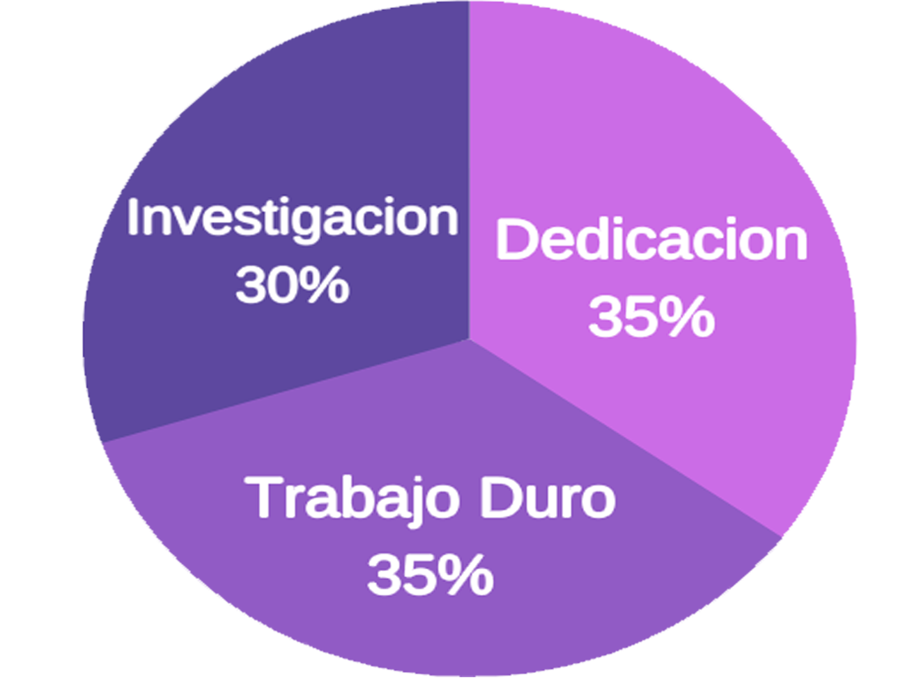

Hola mi nombre es Johnny Arvelo, soy de Venezuela, tengo conocimientos en photoshop, ilustraitor, CorelDraw y actualmente estoy estudiando Programación en la Usam, ademas tengo experiencia en edición de video y audio, ya sea para proyectos personales o para Youtube.
Algunas de mis habilidades son: Que soy de rapido aprendizaje, Organizado a la hora de trabajar, Se trabajar en Equipo, Me gusta manejar lo mas rapido todo lo use.
Lo pricipal que uno debe tener a la hora de estar subiendo videos a Youtube, es la paciencia, es una tarea que consume muchas horas y sobre todo uno fallara mil veces antes de poder tener exito en un video
Mis comienzos fueron muy desastrosos por el 2017, tener una idea equivocada de como sera el realmente, no sera solamente jugar o tomar una camara, grabar lo primero que se te ocurra y pensar que sin preparacion o conocimientos previos todos te empezaran a ver, y en mi caso, me cai un monton de veces antes de poder entender todo lo que realmente necesitaba, Youtube se definiria como 35% dedicacion, 35% trabajo duro y 30% investigacion constante.
Para crear contenido para Youtube, es necesario que saber que tematica tendra tu canal, para despues orientar el tipo de video.
En mi caso, yo creo tanto Reacciones, es decir muestro mi primera reaccion de un cierto contenido en especifico y tambien Resumenes, estos tienen una mayor carga a la hora de crearlos, En esta parte hablaremos de los dos Tipos